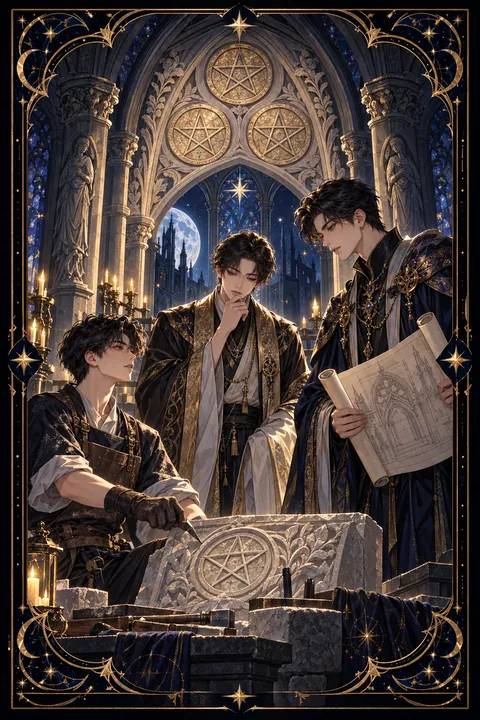

펜타클 3 카드 — 협력으로 완성하는 실력
펜타클 3 카드 한눈에 보기
펜타클 3 카드 상징 읽기

동네보살의 카드 그림은 전통 라이더–웨이트 덱의 뜻을 새 그림으로 옮긴 것입니다. 아래 상징 설명은 전통 덱의 그림을 기준으로 합니다.
성당 안에서 한 석공이 긴 의자 위에 올라서서 작업을 하고 있습니다. 그는 잠시 뒤를 돌아 아래에 선 두 사람과 이야기를 나눕니다.
아래에 선 사람 중 한 명은 설계도를 펼쳐 든 건축가이고 다른 한 명은 수도사입니다. 손으로 만드는 기술자, 계획을 세우는 설계자, 뜻과 가치를 지키는 사람이 한자리에 모여 하나의 건물을 완성해 간다는 의미입니다.
위쪽 돌 아치에는 금화 세 닢이 삼각형 모양으로 새겨져 있습니다. 서로 다른 세 힘이 균형을 이룰 때 단단한 결과물이 만들어진다는 상징입니다.
석공이 사다리가 아닌 의자 위에 서 있다는 점도 눈여겨볼 만합니다. 아직 공사가 진행 중이라는 뜻으로 완성보다 과정과 배움, 그리고 그 과정에서 받는 인정과 조언이 이 카드의 중심입니다. 꼼꼼한 손길이 쌓여야 오래 서 있는 건물이 된다는 점도 함께 일러 줍니다.
펜타클 3 카드 정방향 뜻
정방향 펜타클 3은 각자의 전문성이 모여 좋은 결과를 만들어 내는 협력의 카드입니다. 혼자서는 어려웠던 일이 뜻이 맞는 사람들과 함께하면서 속도가 붙고 완성도가 높아집니다.
이 카드는 실력을 인정받는 시기이기도 합니다. 성실하게 쌓아 온 기술이나 경험을 알아보는 사람이 나타나 중요한 역할을 맡기거나 좋은 평가를 해 줄 수 있습니다.
배우는 자세도 중요합니다. 석공이 설계자와 대화를 나누듯 다른 사람의 의견을 듣고 작업을 다듬을 때 결과물의 수준이 한 단계 올라갑니다. 진행 상황을 중간중간 공유하고 피드백을 구해 보세요. 꼼꼼하게 마무리한 일은 오래도록 당신의 이름을 대신 말해 주는 증거가 됩니다. 혼자 잘하는 것보다 함께 잘해 내는 경험이 다음 기회를 불러옵니다. 작은 일이라도 맡은 부분을 성실히 끝내는 것이 신뢰의 출발점입니다.
펜타클 3 카드 역방향 뜻
역방향 펜타클 3은 여러 사람이 함께 일하지만 손발이 맞지 않는 상태를 보여 줍니다. 역할이 분명하지 않아 서로 일을 미루거나 같은 일을 겹쳐 하면서 시간과 힘이 낭비될 수 있습니다.
결과물의 질이 떨어지는 것도 경고의 한 부분입니다. 마감에 쫓겨 대충 마무리하거나 기본기가 부족한 채로 서두르면 나중에 다시 손봐야 하는 일이 생깁니다. 노력에 비해 인정을 받지 못한다는 서운함이 들 수도 있습니다.
이럴 때는 설계도를 다시 펼치는 것이 먼저입니다. 누가 무엇을 언제까지 할지 글로 정리하고 모두가 같은 그림을 보도록 공유하세요. 부족한 실력은 배우며 채우면 되고 소통이 트이면 멈췄던 작업도 다시 쌓여 갑니다. 탓할 사람을 찾기보다 모두가 같은 목표를 다시 확인하는 자리를 만드는 것이 해결의 시작입니다.
연애에서 펜타클 3 카드
솔로라면 일이나 배움의 자리에서 좋은 사람을 알게 될 여지가 큰 때입니다. 함께 과제를 하거나 같은 목표를 향해 움직이는 사람에게서 성실함과 실력을 보고 호감이 생기기 쉽습니다. 동호회나 강좌처럼 무언가를 함께 만드는 모임에 참여해 보는 것도 방법입니다.
지금 만나는 사람이 있다면 둘이 함께 무언가를 이루어 가며 관계가 단단해집니다. 여행 계획을 세우거나 집을 꾸미는 등 공동의 목표를 정하고 역할을 나누어 보세요. 서로의 장점을 인정하고 부족한 부분을 채워 주는 과정에서 신뢰가 깊어집니다. 한쪽의 생각만 밀어붙이지 않고 두 사람의 의견을 모아 하나의 그림을 그리는 태도가 필요합니다. 함께 이룬 작은 성취를 기념하는 것도 두 사람의 결속을 다지는 좋은 방법입니다. 상대의 솜씨나 노력을 구체적으로 칭찬해 주면 관계에 따뜻한 힘이 실립니다.
재회·속마음 질문에서 펜타클 3 카드
재회 질문에 펜타클 3이 나오면 두 사람이 다시 손을 맞출 여지가 있다는 뜻입니다. 특히 함께 했던 일이나 공통의 지인을 통해 연결의 계기가 생길 수 있습니다. 그러나 옛날 그대로의 방식으로는 같은 문제가 되풀이될 수 있으니 무엇이 어긋났었는지 차분하게 되짚어 보세요. 서로의 역할과 기대를 분명히 나누는 대화가 이루어진다면 관계는 이전보다 튼튼하게 다시 세워질 수 있습니다. 공통의 목표나 관심사가 여전히 남아 있다면 그것이 다시 이어지는 다리가 될 수 있습니다. 그리움을 앞세우기보다 함께 무엇을 해 나갈 수 있을지 구체적으로 이야기하는 편이 상대의 마음을 움직입니다. 서두르지 말고 작은 협력부터 쌓아 가세요.
일·금전에서 펜타클 3 카드
일과 직장에서는 협업이 성과로 이어지는 카드입니다. 팀 프로젝트, 공동 작업, 전문가와의 협력에서 좋은 결과를 기대할 수 있고 당신의 기술이 인정받아 중요한 역할을 맡게 될 수 있습니다. 선배나 전문가의 조언을 적극적으로 구하면 성장 속도가 빨라집니다.
금전 면에서는 기술과 솜씨가 정당한 보수로 돌아오는 흐름입니다. 자신의 작업에 합당한 값을 매기고 여럿이 함께하는 일에서는 수익 배분을 문서로 분명히 해 두는 것이 좋습니다. 맡은 부분의 진행 상황을 자주 공유하면 신뢰가 쌓이고 더 큰 일을 맡을 기회로 이어집니다. 자격증이나 교육처럼 전문성을 높이는 배움에 시간을 쓰기에도 좋은 때입니다.
펜타클 3 카드는 예일까 아니오일까
각자의 역할이 맞물려 좋은 결과를 만든다는 카드라서 예에 가깝습니다. 카드가 거꾸로 섰다면 협력이 삐걱대고 있어 역할과 소통을 정리해야 이루어지는 조건부 답으로 바뀝니다.
자주 묻는 질문
펜타클 3 카드 역방향은 나쁜 뜻인가요?
역방향 펜타클 3은 여러 사람이 함께 일하지만 손발이 맞지 않는 상태를 보여 줍니다. 역할이 분명하지 않아 서로 일을 미루거나 같은 일을 겹쳐 하면서 시간과 힘이 낭비될 수 있습니다.
펜타클 3 카드가 연애 질문에 나오면요?
솔로라면 일이나 배움의 자리에서 좋은 사람을 알게 될 여지가 큰 때입니다. 함께 과제를 하거나 같은 목표를 향해 움직이는 사람에게서 성실함과 실력을 보고 호감이 생기기 쉽습니다. 동호회나 강좌처럼 무언가를 함께 만드는 모임에 참여해 보는 것도 방법입니다.
타로 카드는 어떻게 뽑나요?
타로 카드 페이지에서 78장을 섞으면 그중 22장이 펼쳐집니다. 마음이 가는 세 장을 고르면 과거·현재·미래 자리에 놓이고, 한 장씩 뒤집어 자리와 방향에 맞는 풀이를 읽습니다. 정방향과 역방향은 섞는 순간 정해집니다.